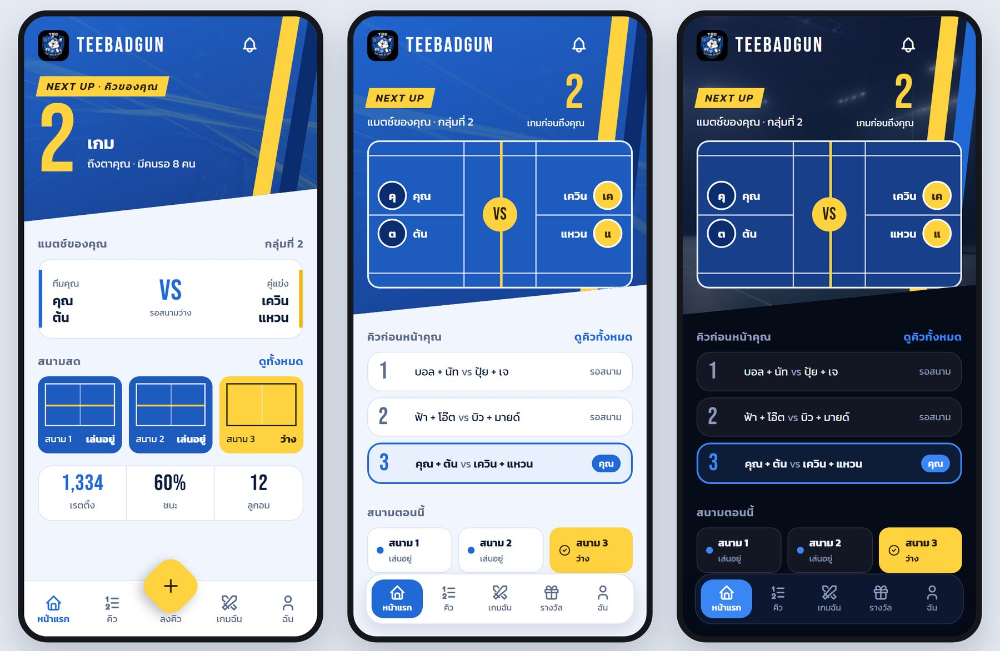
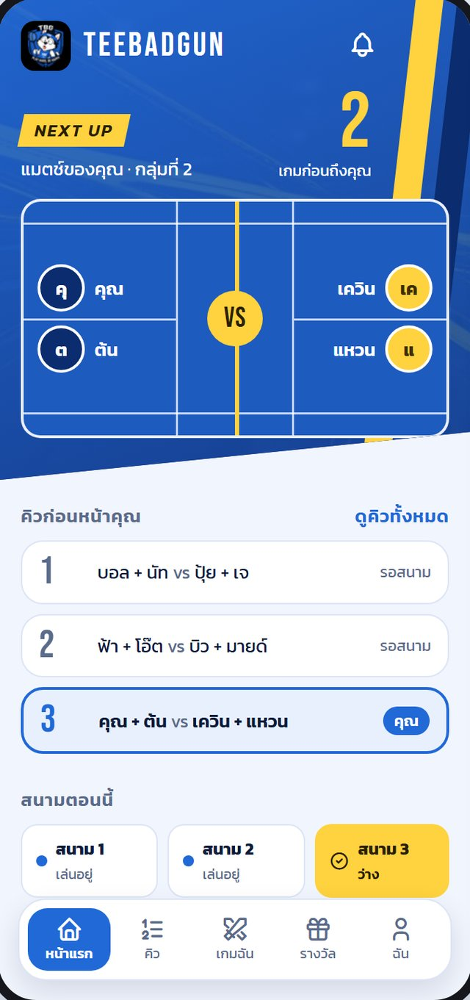
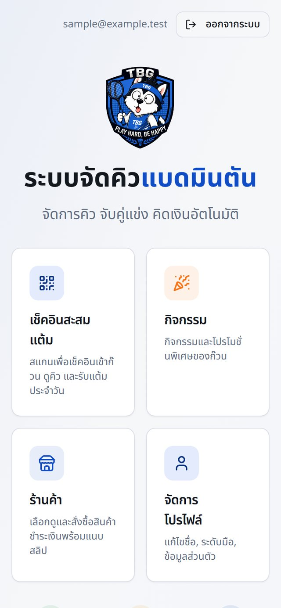
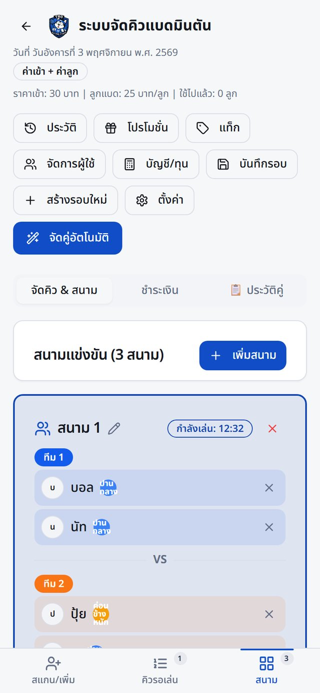
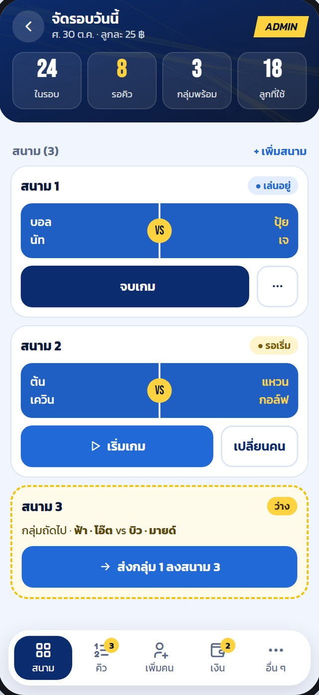
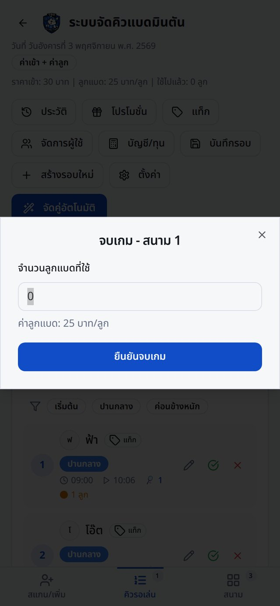
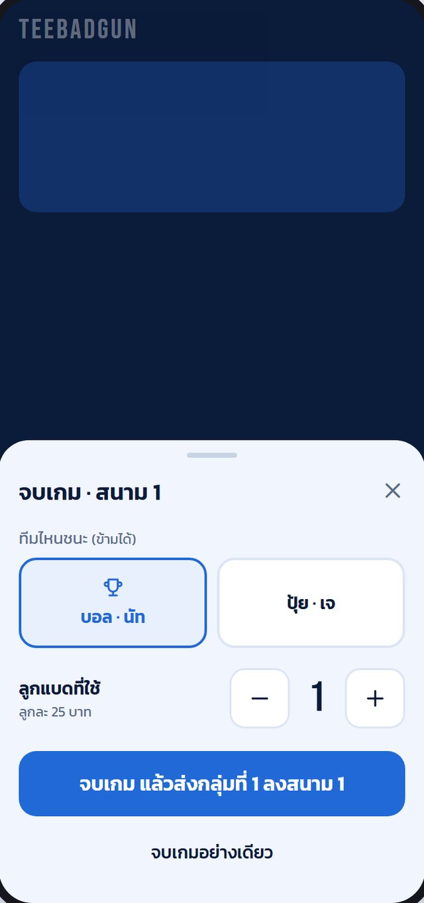
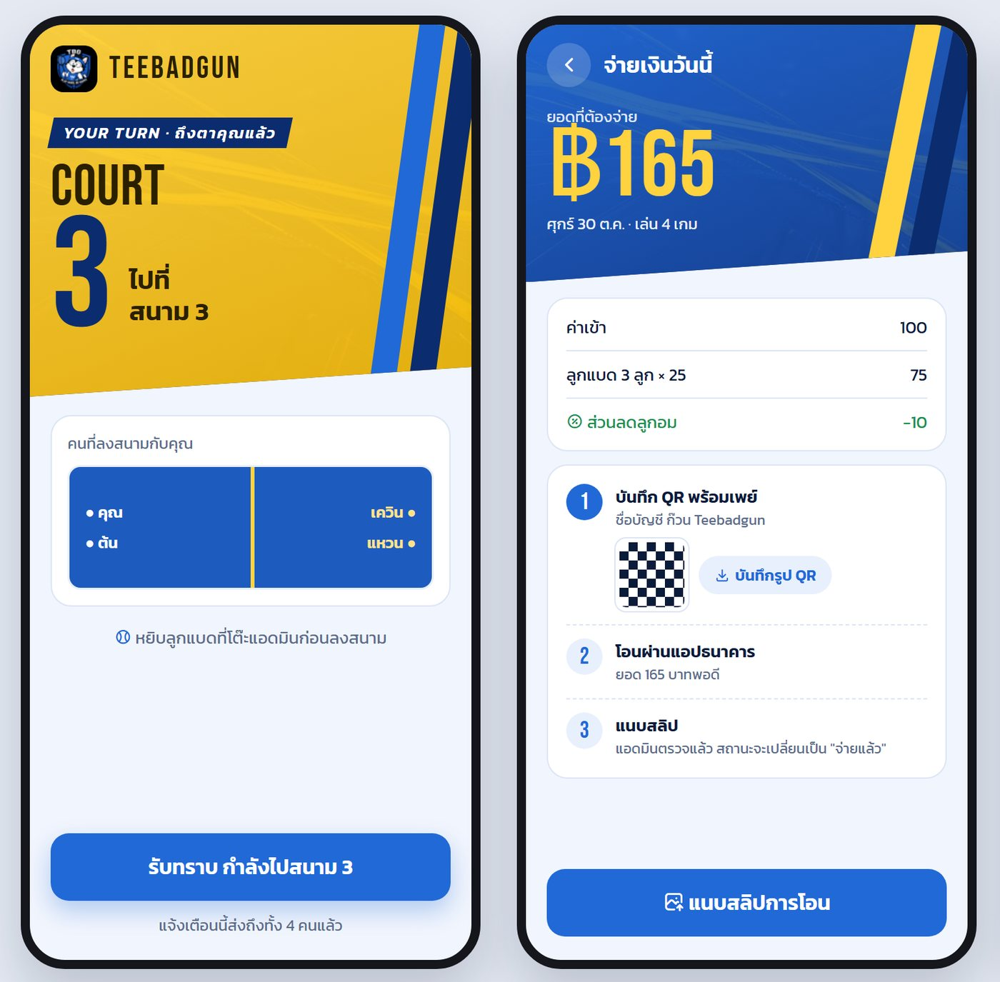
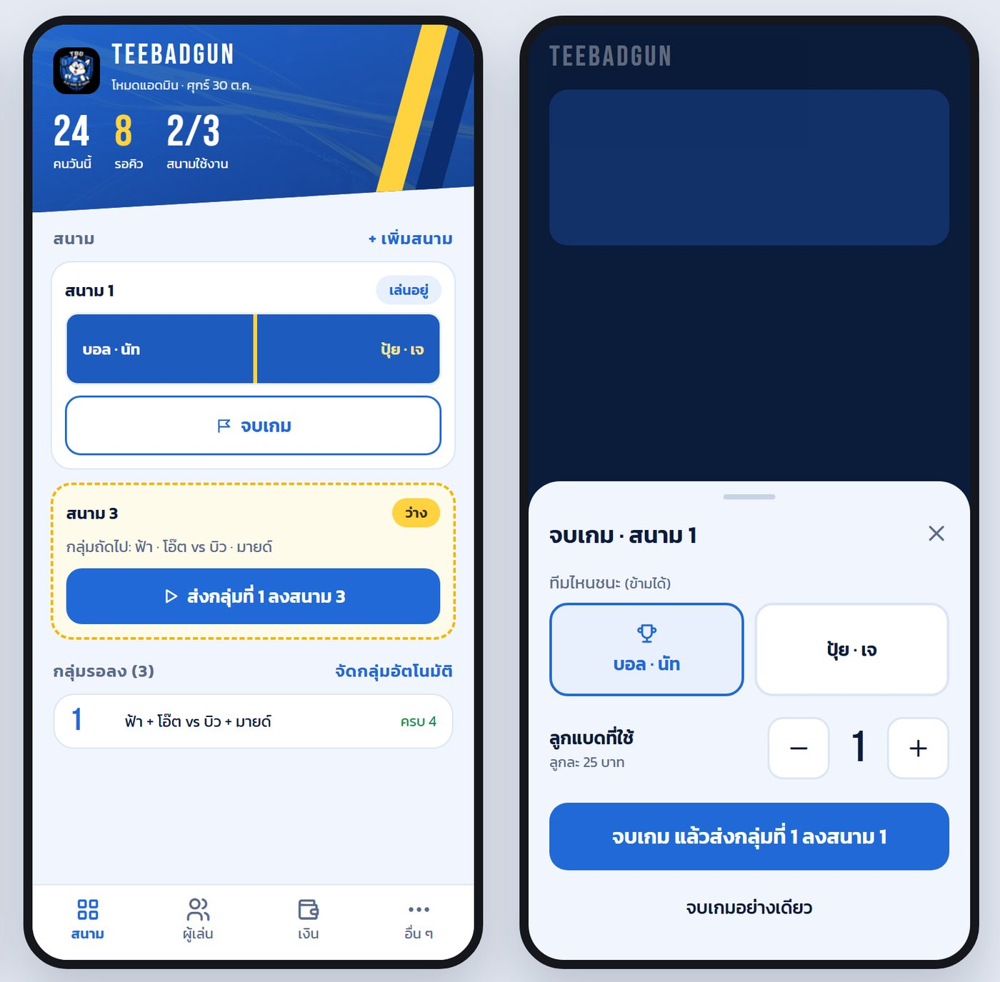
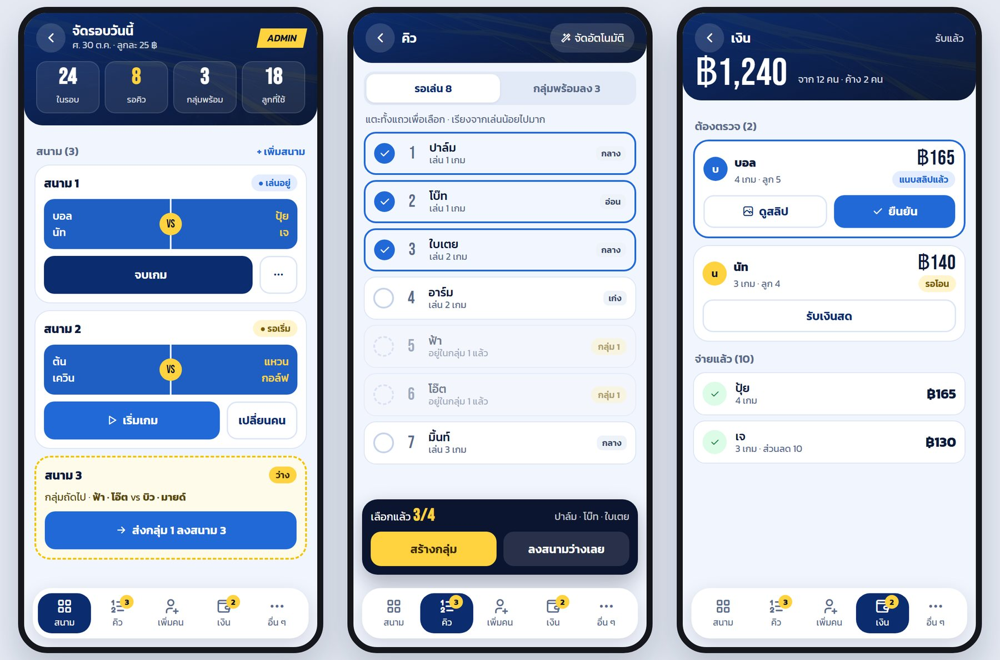

Teebadgun · Redesign Case Study
Redesigning a Badminton Club App Around the Court
Teebadgun runs a club session: queue, pairing, payment, and points. This redesign rebuilt the player and organizer screens, and this page is honest about what each decision gave and what it cost.
Every name, amount, and QR code in these mockups is sample data. No real player information is shown.
01 — Overview
Two people, one noisy court hall
Players glance at their phone between games and want to know when they play and who with. The organizer is on their feet, running several courts at once with one hand. Testing the app on the live site showed that the screens did not yet fit either situation, so the redesign started from how a session actually runs.
02 — What Testing Found
Small frictions that add up during a session
Hard to operate
- Nine buttons in the top bar wrapped onto several rows.
- The button that removes a player from a court was only 24px.
- Sending a waiting group to a court took three steps.
- Selecting a player only worked on the small number at the left of the row.
Easy to get wrong
- The shuttle count started at 0, so forgetting it meant charging nothing.
- Players already in a waiting group had no label, and could be picked twice.
- Deleting a court had no confirmation.
- Organizers could not find their way in from the home-screen app, which opened the player login.
03 — Needs Map
What each person needs during a session
Player
When do I play?
Queue position and court status, never a guessed time.
Who am I playing with?
A court view with both teams in position.
What do I owe?
A clear bill and three payment steps.
Organizer
What is next on each court?
One main button that follows the court state.
How do I avoid mistakes?
Group labels and a shuttle counter that starts at 1.
Where are my tools?
A labeled bottom menu, usable with one hand.
04 — User Flow
Two flows that keep handing off to each other
Player
Organizer
05 — Session Journey
One session, stage by stage
Player
Organizer
Found in testing
Design answer
06 — Direction
"Court View": show the game the way people picture it

Left: an earlier direction built on cards. Middle and right: Court View, the chosen direction, in light and dark themes.

Queue, not a clock
How many games are left, never a guessed time.
A court from above
Your team is on the left in blue, opponents on the right in yellow.
Your row stands out
The queue highlights your own row.
Court status at a glance
Each court shows whether it is in play or free.
07 — Before & After
The same moments, old screen and new screen

Opening the app as a player
- Before: a menu of four cards, so players had to go elsewhere to see the queue.
- After: the next match and queue position are on the first screen.


Running courts as an organizer
3 → 1steps to send a group to a free court
- Before: nine buttons filled the top, pushing the queue and courts down.
- After: courts come first, with one main button each and a labeled menu.


Ending a game
0 → 1starting value of the shuttle count
- Before: a typed field starting at 0, so forgetting it meant no shuttle charge.
- After: − and + buttons in a bottom sheet, with the next group one tap away.
Before screens were rendered from the earlier version of the code. After screens are design mockups. Both use sample data.
08 — Decisions & Trade-offs
What each change gave, and what it cost
1. Show queue position, never a time
Organizers start games at irregular moments when the hall is busy, so any time estimate would be wrong.
Upside
The screen never makes a promise the session cannot keep.
Cost
Players cannot tell how many minutes they have, for example to step out.
2. Put the court at the top of the player's screen
Partners and opponents appear in the positions they will stand in.
Upside
The match can be read in one glance, without reading a list.
Cost
The court takes up much of the first screen and pushes the queue further down.
3. Give each court card one main button
The button follows the court's state: send a group, start the game, or end it. Everything else moves into a ⋯ menu.
Upside
Sending a group to a free court went from three steps to one tap.
Cost
Less common actions take an extra tap and are harder to discover.
4. Replace the shuttle field with − and + buttons
The count now starts at 1 when a game ends, instead of an empty-feeling 0 in a text field.
Upside
Faster with one hand, and forgetting no longer means a free shuttle.
Cost
A default can still be wrong: if a game used more shuttles and nobody adjusts it, the bill is too low.
5. Warn about pairings instead of pairing automatically
Organizers still build the groups. The app points out repeat partners, repeat opponents, uneven skill, and anyone who was moved back.
Upside
Organizers keep their judgment about people, which an algorithm cannot see.
Cost
The mental work stays with the organizer, even on the busiest nights.
6. Use one login page for everyone
A separate organizer entrance was tried first, but it was hard to find from the home-screen app. Now the app routes people by their permissions after login.
Upside
Nobody has to know which door is theirs.
Cost
The page needs an extra line telling organizers they are in the right place.
09 — Product Walkthrough
From your turn to paying, and from court to end of game

Player: the whole screen turns yellow when it is your turn, then payment walks through three steps.

Organizer: a free court is marked in yellow, and ending a game can send the next group in the same tap.

Organizer tabs: courts, queue, and money, with a labeled five-button menu replacing the crowded top bar.
These are design-stage mockups, so some details differ from the build. For example, the "auto-group" button seen here was later dropped in favor of decision 5.
10 — Design System
A sporty identity taken from the club's logo
NEXT UP 2
ถึงตาคุณแล้ว
Bebas Neue for numbers and English, Kanit for Thai. The same court component is reused across organizer screens and the TV board.
11 — Where It Stands
What is proven, and what still is not
01
Built and tested on staging
The club still uses the previous version. The redesign runs on a test build with sample data, and is planned to start after 6 November 2026.
02
No impact numbers yet
The tap counts above come from the design itself. Whether sessions really run faster needs measuring once real clubs use it.
03
Three languages, not everywhere
Player screens come in Thai, English, and Simplified Chinese, but organizer screens and server messages are still Thai.
Interested in working together?
Open to UX/UI design work on products used in real, messy situations. Feel free to reach out.